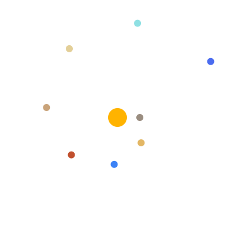

Solar System Quick Facts
- The solar system formed about 4.6 billion years ago.
- It has 8 planets: Mercury, Venus, Earth, Mars, Jupiter, Saturn, Uranus and Neptune.
- The Sun holds 99.86% of all the mass in the solar system.
- Light from the Sun takes about 8 minutes 20 seconds to reach Earth.
- The four inner planets are rocky; the four outer planets are gas or ice giants.
- Between Mars and Jupiter lies the asteroid belt.
Random Space Fact
Click the button to learn something new.
How the Planets Orbit
